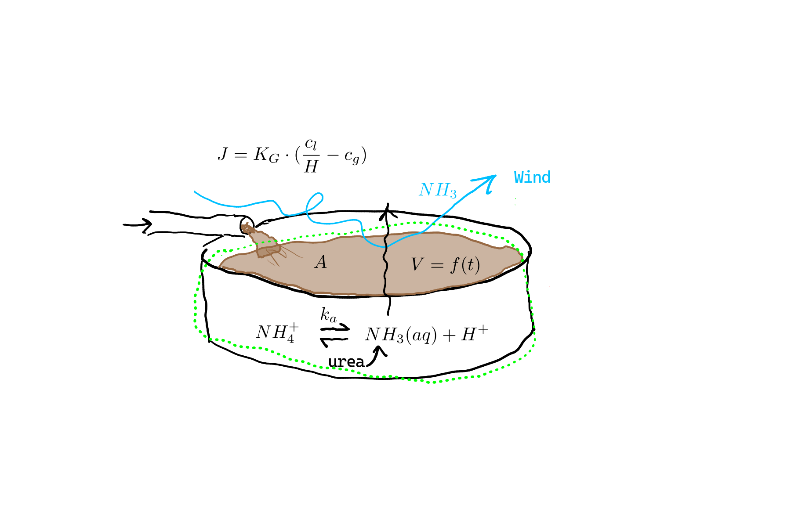
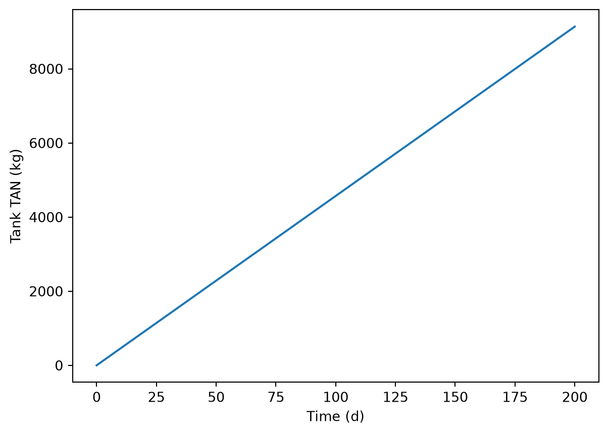
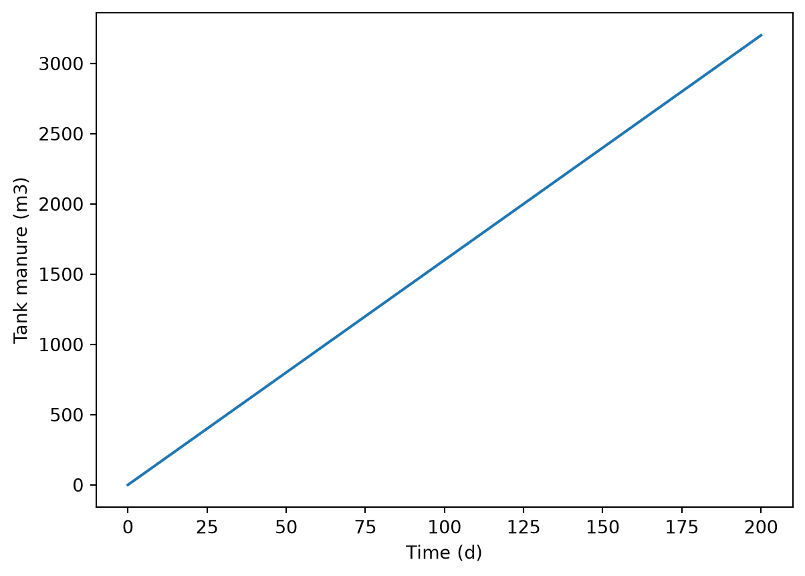
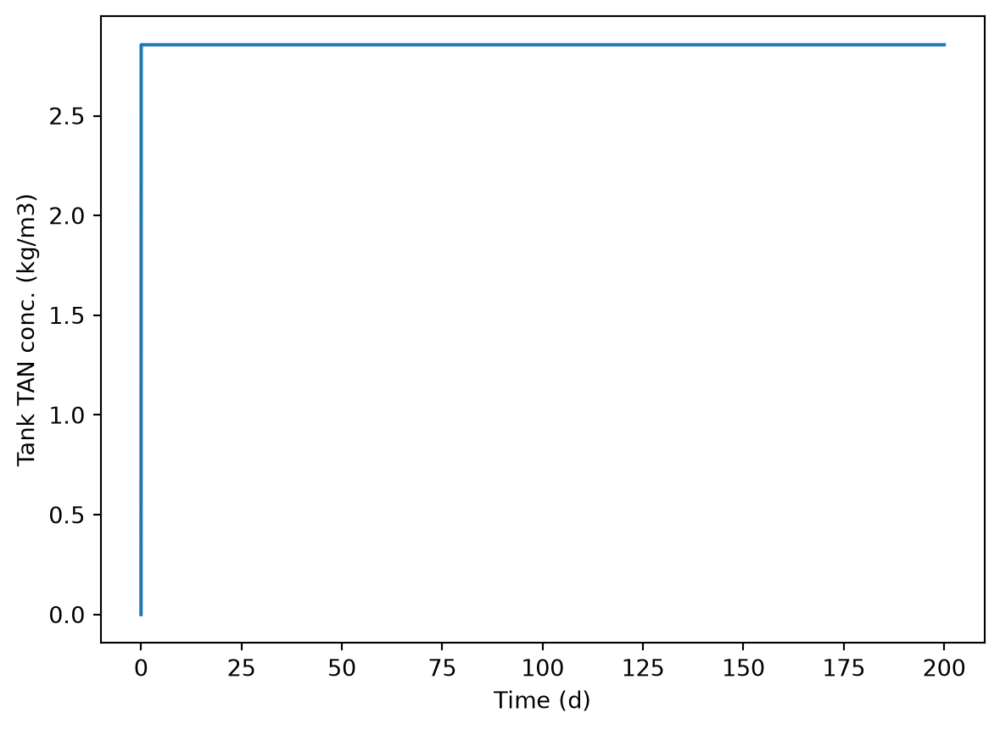
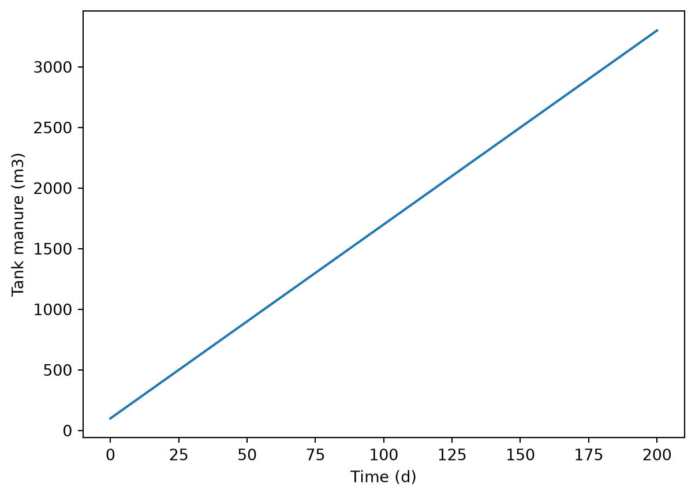
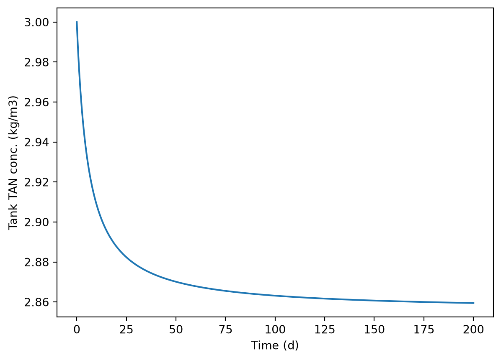
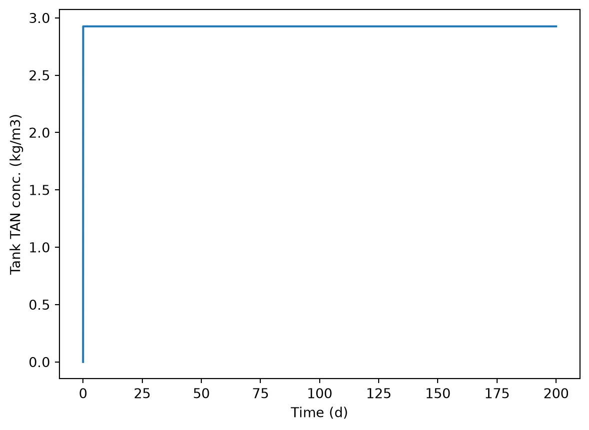

import numpy as np
import matplotlib.pyplot as plt
import slurry_tank as st
from importlib import reload
reload(st)<module 'slurry_tank' from '/home/sasha/repos/course-modelling-2026/classes/10-24-sept-mini-proj/solutions/slurry_tank.py'>See the original description online.
There are at least three different conceptual models that could be used here, with differences in simplifications and assumptions. Here we’ll cover one, a more comprehensive one, in detail and try to explain where other approaches would differ.
In our conceptual model, we have a tank with slurry that contains a uniform concentration of total ammonia (or total ammoniacal nitrogen, TAN). Free ammonia (\(\ce{NH3(aq)}\)), which is in pH-dependent chemical equilibrium with ammonium (\(\ce{NH4+}\)) is lost from the tank through volatilization. This reduces the amount of total ammonia (or total ammoniacal nitrogen, TAN) in the tank. Slurry is continually added to the tank at a constant rate, but not continually removed. Instead, after some weeks or months of filling, the tank is completely emptied, and the slurry, with its remaining TAN, is added to crop fields. The ammonia that was volatilized is not available for crop application, and the difference in concentration between fresh slurry (at the point where it is added to the tank) and stored slurry (once the tank is emptied) shows how much has been lost.
So both TAN mass and slurry volume are state variables. Although urea is normally hydrolyzed quite quickly, we’ll include it as a state variable as well, to have a more flexible model that could, for example, simulate the effect of urea hydrolysis inhibitors.
Here is a sketch of the conceptual model:

For the complete model, we need conservation equations for each state variable.
For slurry mass, we have:
rate of accumulation = rate of slurry addition
Here the rate of slurry addition is simply the rate at which slurry is pumped or somehow loaded into the tank.
Urea:
rate of accumulation = rate of addition in slurry - rate of urea hydrolysis
TAN:
rate of accumulation = rate of addition in slurry + rate of urea hydrolysis - rate of volatilization
Note that free ammonia does not show up here! See section 6.6 in the book for more on this.
For TAN and urea addition via slurry flow, we have advection:
\[ \dot{m} = c \cdot \dot{V}, \]
where \(\dot{m}=\) the mass flow rate of urea or TAN (e.g., \(\gps\)), \(c=\) the concentration (e.g., \(\gpmc\)), and \(V=\) volumetric slurry flow rate (\(\mcps\)).
For volatilization, the appropriate constitutive equation is this one:
\[ J = K_G \cdot (c_g^* - c_g). \]
where $c_g = $ the ambient (background atmospheric) gaseous concentration of ammonia and \(c_g^* =\) the free ammonia concentration in slurry, converted to gas phase units, i.e., \(c_g^* = \frac{c_l}{H}\), where \(H=\) dimensionless Henry’s law constant (aq:g), i.e., the ratio of equilibrium concentration in the slurry divided by the concentration in the gas phase, and $c_l = $ the liquid (aqueous) phase concentration of free ammonia \(\ce{NH3(aq)\). Why free ammonia and not TAN? Because free ammonia is the volatile component. Charged solutes are not volatile.
Because urea is included, we also need an equation for hydrolysis. We’ll assume a first-order reaction, so the volumetric rate of urea hydrolysis (e.g., \(\gpmcps\)) is:
\[ r_{urea} = k_u \cdot c_{urea}. \]
We could convert to a mass-based rate by using the urea mass instead of concentration.
\[ \dot{m}_{urea} = k_u \cdot m_{urea}. \]
What are the units? Well, they aren’t fixed. Mole-based units are common, but here we could just use nitrogen (N) mass, e.g., g. The advantage is that the rate of TAN production by urea hydrolysis is exactly \(r_{urea}\) as well. This means we don’t need to explicitly use stoichiometric coefficients.
We could put the equation for the conversion of liquid (aqueous) phase free ammonia to the equivalent gas-phase concentration here:
\[ c_g^* = \frac{c_l}{H}. \]
We also need a way to link \(c_l\), which is the slurry concentration of free ammonia, to the TAN concentration or mass. This is because \(c_l\) is in our constitutive equation for volatilization rate, but TAN is our state variable.
For this dynamic model we’ll need to have some initial concentrations, of TAN and urea, as initial conditions. Slurry volume is another initial condition.
Now we put things together. We need a governing equation (GE) for each of our three state variables.
Slurry volume is simple:
\[ \frac{dV}{dt} = \dot{V}. \]
That is, the time derivative of slurry volume is equal to the slurry flow rate into the tank.
For urea, remembering that we are using mass of nitrogen (N) (not moles N, not moles urea or moles or mass ammonia) as our fundamental unit for urea and TAN, and using the abbreviation \(u\) for urea, we have:
\[ \frac{du}{dt} = c{u,in} \cdot \dot{V} - k_u \cdot m_u. \]
Finally, for TAN, we have three terms on the RHS (see conservation equation above).
\[ \frac{dTAN}{dt} = c{TAN,in} \cdot \dot{V} + k_u \cdot m_u - K_G \cdot (\frac{c_l}{H} - c_g) \cdot A. \]
When it comes to implementing the model, it can be clearer to define separate variables (objects) for those terms on the RHS, and then combine the objects.
For simpler models, just drop terms from the formulation and GE, e.g., no advection.
The model described above is implemented as the stmod() function in the slurry_tank module.
slurry_tank.py
"""
File name: slurry_tank.py
Author: Sasha D. Hafner and Frederik Dalby
Course: Modelling 2026
Description:
This module defines a model function stmod() for
modeling ammonia volatilization from a slurry
storage tank.
Usage:
See other files in this directory
"""
from scipy.integrate import solve_ivp
import numpy as np
def stmod(
f_in,
f_out,
a_top,
c_TAN_0,
c_urea_0,
c_bg,
pH,
ku,
kg,
temp_c,
t_range,
t_step,
m_TAN_0 = 0.,
m_urea_0 = 0.,
v_man_0 = 1.E-6
):
"""
Dynamic model for ammonia volatilization from a manure storage
tank with constant but possibly unequal manure flow in and out
and a variable volume of manure. Includes urea hydrolysis.
Parameters
----------
f_in : float
Rate of manure pumping into tank (m3/s)
f_out : float
Rate of manure pumping out of tank (m3/s)
a_top : float
Area of tank (top and at any depth) (m2).
c_TAN_0 : float
Concentration of TAN in fresh manue (kg/m3 as N).
c_urea_0 : float
Concentration of urea in fresh manue (kg/m3 as N).
c_bg : float
Concentration of NH3 (g) in ambient (background)
air (kg/m3 as N).
pH : float
Manure pH (pH units).
ku : float
First-order reaction rate constant for urea hydrolysis (1/s).
kg : float
Overall gas-phase mass transfer coefficient (m/s).
temp_c : float
Slurry temperature (deg. C) for speciation calculations.
t_range : tuple, list, or array (length 2)
Initial and final time requested in output (s).
t_step : float
Time step requested for output (s).
"""
# Calculate Henry's law constant based on temperature (dimensionless, aq:g)
hen = hlc(temp_c)
# Calculate fraction of TAN as NH3(aq) (dimensionless)
frac_NH3 = free_NH3(pH, temp_c)
# Define rates function
def rates(t, y):
# Extract state variable values
m_TAN = y[0]
m_urea = y[1]
v_man = y[2]
# TAN flow in and out by advection (kg/s as N)
TAN_in = c_TAN_0 * f_in
TAN_out = m_TAN / v_man * f_out
# Urea flow in and out by advection (kg/s as N)
urea_in = c_urea_0 * f_in
urea_out = m_urea / v_man * f_out
# Urea hydrolysis rate (kg/s as N)
urea_hyd = ku * m_urea
# NH3 volatilization (kg/s as N)
volat = kg * a_top * (frac_NH3 * m_TAN / v_man / hen - c_bg)
# Calculate derivatives using GE from model formulation
dm_TAN_dt = TAN_in - TAN_out + urea_hyd - volat
dm_urea_dt = urea_in - urea_out - urea_hyd
dv_man_dt = (f_in - f_out)
return np.array([dm_TAN_dt, dm_urea_dt, dv_man_dt])
# Now solve with solve_ivp()
res = solve_ivp(rates, t_span = t_range, y0 = [m_TAN_0, m_urea_0, v_man_0],
t_eval = np.arange(t_range[0], t_range[1] + t_step, t_step))
# That gives us masses of the three state variables
# Let's calculate concentrations too by dividing the two solute mass elements (TAN and urea) by the slurry element
concs = res.y[0:2, ] / res.y[2, ]
out = {
't': res.t,
'v_man': res.y[2, :],
'm_TAN': res.y[0, :],
'm_urea': res.y[1, :],
'c_TAN': concs[0, :],
'c_urea': concs[1, :]
}
# Return results
return(out)
def free_NH3(pH, temp_c):
"""
Calculate free ammonia fraction (NH3 (aq)) from pH and TAN concentration.
Parameters
----------
pH : float or array-like
Solution pH
temp : float or array-like
Temperature in degrees C
Returns
-------
float or array with free ammonia concentration in same units as TAN input
"""
# Calculate H+ concentration from pH
c_H = 10**(-pH)
# And Ka
Ka = 10**-(0.0905 + 2729.31 / (temp_c + 273.15))
# Apply equation from text
f_NH3 = 1 / (1 + c_H / Ka)
# Return solution
return f_NH3
def hlc(temp_c):
"""
Caclulate Henry's law constant for NH3 from temperature
Parameters
----------
temp_c : float
Temperature in deg. C
Returns
-------
float with dimensionless Henry's law constant (aq:g)
"""
# 1. temp_c is input temperature in degrees C but the calculations are based on Kelvin
temp_k = temp_c + 273.15
# 2. Universal gas constant (atm L/mol-K)
R = 0.082057
# 3. Henry's law constant in mol / L - atm
kh = 10**(-3.51645 - 0.0013637 * temp_k + 1701.35 / temp_k)
# 4. Henry's law constant in dimensionless form aq:g (e.g., g/m3 aq. per g/m3 gas, g/L per g/L, etc.)
hen = R * temp_k * kh
return(hen)
Note that in this model, Henry’s law is calculated from temperature, and that is done using a function. The same goes for TAN speciation. It is not necessary to use a separate function but can help to improve code readability and portability.
There are some simpler alternatives in this file:
slurry_tank_alt.py
"""
File name: slurry_tank_alt.py
Author: Sasha D. Hafner and Frederik Dalby
Course: Modelling 2026
Description:
This module defines functions for modeling ammonia volatilization
from a slurry storage tank.
Usage:
See other files in this directory
"""
# Load packages
import numpy as np
from scipy.integrate import solve_ivp
import numpy as np
import matplotlib.pyplot as plt
from scipy.integrate import solve_ivp
def dynmod(rt,
depth,
c_TAN_0,
c_urea_0,
c_bg,
pH,
ku,
kl,
t_range,
t_step,
hen = 2000.,
pka = 9.24):
"""
Dynamic model for ammonia volatilization from a manure storage
tank with constant and equal manure flow in and out and a constant
volume of manure. Includes urea hydrolysis.
Parameters
----------
rt : float
Retention time of manure in the tank (s)
depth : float
Depth of manure in the tank (m).
c_TAN_0 : float
Concentration of TAN in fresh manue (kg/m3 as N).
c_urea_0 : float
Concentration of urea in fresh manue (kg/m3 as N).
c_bg : float
Converted concentration of NH3 (g) in ambient (background)
air (kg/m3 as N in aqueous phase).
pH : float
Manure pH (pH units).
ku : float
First-order reaction rate constant for urea hydrolysis (1/s).
kl : float
Overall liquid-phase mass transfer coefficient (m/s).
t_range : tuple, list, or array (length 2)
Initial and final time requested in output (s).
t_step : float
Time step requested for output (s).
hen : float
Henry's law constant (dimensionless, aq:g).
pka : float
Negative log_10 of the equilibrium constant
(acid dissociation constant) for NH4+ -> NH3 + H +
(dimensionless).
"""
# Sort out some constants
frac_NH3 = 1/(1 + 10**(pka - pH))
# Define rates function
def rates(t, conc):
c_TAN = conc[0]
c_urea = conc[1]
TAN_in = c_TAN_0 / rt
TAN_out = c_TAN / rt
urea_in = c_urea_0 / rt
urea_out = c_urea / rt
urea_hyd = ku * c_urea
volat = kl / depth * (frac_NH3 * c_TAN - c_bg / hen)
dc_TAN_dt = TAN_in - TAN_out + urea_hyd - volat
dc_urea_dt = urea_in - urea_out - urea_hyd
return np.array([dc_TAN_dt, dc_urea_dt])
# Now solve with solve_ivp()
res = solve_ivp(rates, t_span = t_range, y0 = [c_TAN_0, c_urea_0],
t_eval = np.arange(t_range[0], t_range[1] + t_step, t_step))
# Return results
return(res)
def ssmod(rt,
depth,
c_TAN_0,
c_bg,
pH,
ku,
kl,
hen = 2000.,
pka = 9.24):
"""
Steady-state model for ammonia volatilization from a manure storage
tank with constant and equal manure flow in and out and a constant
volume of manure. Does not include urea.
Parameters
----------
rt : float
Retention time of manure in the tank (s)
depth : float
Depth of manure in the tank (m).
c_TAN_0 : float
Concentration of TAN in fresh manue (kg/m3 as N).
c_urea_0 : float
Concentration of urea in fresh manue (kg/m3 as N).
c_bg : float
Converted concentration of NH3 (g) in ambient (background)
air (kg/m3 as N in aqueous phase).
pH : float
Manure pH (pH units).
ku : float
First-order reaction rate constant for urea hydrolysis (1/s).
kl : float
Overall liquid-phase mass transfer coefficient (m/s).
hen : float
Henry's law constant (dimensionless, aq:g).
pka : float
Negative log_10 of the equilibrium constant
(acid dissociation constant) for NH4+ -> NH3 + H +
(dimensionless).
"""
# Sort out some constants
frac_NH3 = 1/(1 + 10**(pka - pH))
# And our two grouped constants K and B
kk = rt * kl * frac_NH3 / depth
bb = rt * kl * c_bg / depth
c_TAN = (c_TAN_0 - bb) / (1 + kk)
# Return results
return(c_TAN)
import numpy as np
import matplotlib.pyplot as plt
import slurry_tank as st
from importlib import reload
reload(st)<module 'slurry_tank' from '/home/sasha/repos/course-modelling-2026/classes/10-24-sept-mini-proj/solutions/slurry_tank.py'>Let’s sort out some inputs. Say we have 200 cows, each producing around 80 kg of slurry per day. We will only run the model with a filling tank, without any removal.
f_in = 200 * 80 / 1000 / 86400
f_out = 0.For the tank area, let’s assume a 4 m deep tank still needs to hold 200 days’ worth of manure.
depth = 4.
a_top = f_in * 200 * 86400 / depth
a_top800.0What does this imply for a tank diameter, assuming a cylindrical tank?
2 * np.sqrt(a_top / np.pi) np.float64(31.915382432114615)32 m is plausible.
Let’s set the other inputs.
kg = 0.01
c_bg = 0.
pH = 7.
c_TAN_0 = 3
c_urea_0 = 0
ku = 0.
temp_c = 15.Finally, let’s run the model. We have assumed the tank should be emptied after no more than 200 days, so we’ll run it that long.
reload(st)
pred_10 = st.stmod(f_in=f_in,
f_out=f_out,
a_top=a_top,
c_TAN_0=c_TAN_0,
c_urea_0=c_urea_0,
c_bg=c_bg,
pH=pH,
ku=ku,
kg=kg,
temp_c=temp_c,
t_range=[0, 200 * 86400],
t_step=3600)Plot results. Note that these are now masses, not concentrations.
plt.plot(pred_10['t'] / 86400, pred_10['m_TAN'])
plt.xlabel('Time (d)')
plt.ylabel('Tank TAN (kg)')Text(0, 0.5, 'Tank TAN (kg)')
plt.close()
plt.plot(pred_10['t'] / 86400, pred_10['v_man'])
plt.xlabel('Time (d)')
plt.ylabel('Tank manure (m3)')Text(0, 0.5, 'Tank manure (m3)')
plt.plot(pred_10['t'] / 86400, pred_10['c_TAN'])
plt.xlabel('Time (d)')
plt.ylabel('Tank TAN conc. (kg/m3)')Text(0, 0.5, 'Tank TAN conc. (kg/m3)')
Interestingly, a steady state concentration is very quickly reached. How is this possible? Well, we start with very little slurry in the tank, but the area of that slurry is always the same. So it has a very high rate of volatilization relative to the TAN present. It might be more interesting to start with more slurry.
reload(st)
pred_11 = st.stmod(f_in=f_in,
f_out=f_out,
a_top=a_top,
c_TAN_0=c_TAN_0,
c_urea_0=c_urea_0,
c_bg=c_bg,
pH=pH,
ku=ku,
kg=kg,
temp_c=temp_c,
t_range=[0, 200 * 86400],
t_step=3600,
m_TAN_0=c_TAN_0*100,
v_man_0=100)Plot results.
plt.close()
plt.plot(pred_11['t'] / 86400, pred_11['v_man'])
plt.xlabel('Time (d)')
plt.ylabel('Tank manure (m3)')Text(0, 0.5, 'Tank manure (m3)')
plt.plot(pred_11['t'] / 86400, pred_11['c_TAN'])
plt.xlabel('Time (d)')
plt.ylabel('Tank TAN conc. (kg/m3)')Text(0, 0.5, 'Tank TAN conc. (kg/m3)')
And for this reference scenario of sorts, we can calculate the N loss. At the end!
100 * (1 - pred_11['c_TAN'][-1] / c_TAN_0)np.float64(4.684630839893833)Compare to the earlier solution, which would reach steady-state sooner.
100 * (1 - pred_10['c_TAN'][-1] / c_TAN_0)np.float64(4.806628891606357)We’ll evaluate a different scenario with this model: reducing the area of the tank. Let’s cut it in half.
pred_12 = st.stmod(f_in=f_in,
f_out=f_out,
a_top=a_top/2,
c_TAN_0=c_TAN_0,
c_urea_0=c_urea_0,
c_bg=c_bg,
pH=pH,
ku=ku,
kg=kg,
temp_c=temp_c,
t_range=[0, 200 * 86400],
t_step=3600,
m_TAN_0=0,
v_man_0=1e-6)Plot results.
plt.close()
plt.plot(pred_12['t'] / 86400, pred_12['v_man'])
plt.xlabel('Time (d)')
plt.ylabel('Tank manure (m3)')Text(0, 0.5, 'Tank manure (m3)')
plt.plot(pred_12['t'] / 86400, pred_12['c_TAN'])
plt.xlabel('Time (d)')
plt.ylabel('Tank TAN conc. (kg/m3)')Text(0, 0.5, 'Tank TAN conc. (kg/m3)')
Calculate the N loss.
100 * (1 - pred_12['c_TAN'][-1] / c_TAN_0)np.float64(2.4624959793321577)